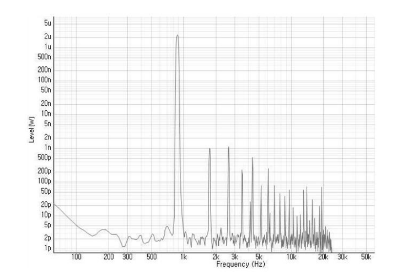

The Effect of Liquid on the Vibrational Intensity of a Wineglass at Steady State Resonance
Junghwan Lee.
In Proceedings of the Korean Physical Society 2018 Spring Meeting, 2018.
As a liquid is inserted into a wineglass, the natural frequency of the wineglass decreases.
This phenomenon, known as pitch lowering, is well explained in past papers. However, previous
literature have not yet mentioned that pitch lowering also reduces the resonance intensity of
a wineglass. Thus, this present paper aims to extend the body of research on this topic by
describing the relationship between pitch lowering and its effect on resonation intensity. To
do so, we identify the vibrating wineglass wall as a damped harmonic oscillator, derive a
theoretical model, and find that the resonance intensity of the wineglass is proportional to
the square of its natural frequency, under the assumption that damping stays constant. However,
our experiments showed the coefficient of damping to increase with respect to the amount of
liquid, which caused the data to deviate from its theoretical predictions. We conclude by
discussing the accuracy and limitation of our proposed model.
